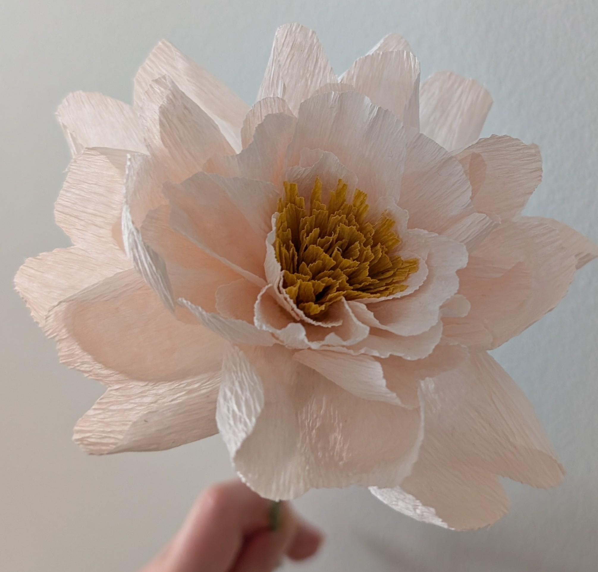

I bought some pink peonies the other day They open up beautifully and then they turn white. They also smell amazing! But they should be kept away from cats and dogs, as they are toxic to them.

Here's a picture of a peony made from crepe paper for comparison!